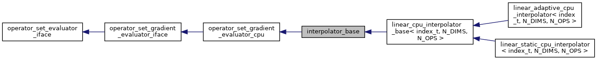
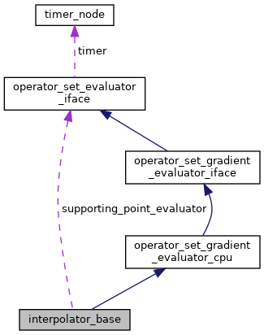
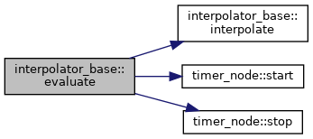
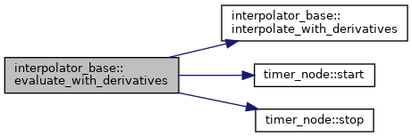
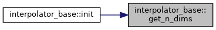
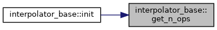
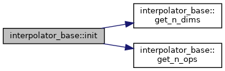
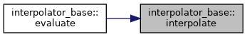
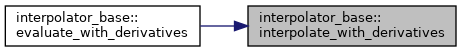

#include <interpolator_base.hpp>


Public Member Functions | |
| interpolator_base (operator_set_evaluator_iface *supporting_point_evaluator, const std::vector< int > &axes_points, const std::vector< double > &axes_min, const std::vector< double > &axes_max) | |
| Construct an interpolator with predefined parametrization space. More... | |
| virtual int | init () |
| Initialize interpolator, perform internal sanity checks unavailable at construction time. More... | |
| int | evaluate (const std::vector< double > &state, std::vector< double > &values) |
| Evaluate all operators at the given state (point in parametrization space) Runs timer and calls virtual interpolate routine. More... | |
| int | evaluate_with_derivatives (const std::vector< double > &states, const std::vector< int > &states_idxs, std::vector< double > &values, std::vector< double > &derivatives) |
| Evaluate operators and their gradient for every specified state (point in parametrization space) More... | |
| virtual int | interpolate (const std::vector< double > &point, std::vector< double > &values)=0 |
| Compute interpolation for all operators at the given point. More... | |
| virtual int | interpolate_with_derivatives (const std::vector< double > &points, const std::vector< int > &points_idxs, std::vector< double > &values, std::vector< double > &derivatives)=0 |
| Compute interpolation and its gradient for all operators at every specified point. More... | |
| virtual int | get_n_dims ()=0 |
| Get the number of dimensions in interpolation space Virtual, to be overridden by a child class. More... | |
| virtual int | get_n_ops ()=0 |
| Get the number of operators Virtual, to be overridden by a child class. More... | |
| int | get_axis_n_points (int axis) |
| Get the number of supporting points for the given axis. More... | |
| double | get_axis_min (int axis) |
| Get the parametrization minimum value for given axis. More... | |
| double | get_axis_max (int axis) |
| Get the parametrization maximum value for given axis. More... | |
| uint64_t | get_n_interpolations () |
| Get the number of interpolations that took place. More... | |
| uint64_t | get_n_points_total () |
| Get the total number of supporting points in parameter space. More... | |
| uint64_t | get_n_points_used () |
| Get the number of supporting points used (evaluated through supporting_point_evaluator) The number is equal to n_points_total for static interpolation methods. More... | |
 Public Member Functions inherited from operator_set_evaluator_iface Public Member Functions inherited from operator_set_evaluator_iface | |
| operator_set_evaluator_iface () | |
| Construct a new operator set evaluator iface object. More... | |
| void | init_timer_node (timer_node *timer_) |
| Initialize timer node to provide timing for operator set evaluation. More... | |
Protected Attributes | |
| const std::vector< int > | axes_points |
| number of supporting points along each axis More... | |
| const std::vector< double > | axes_min |
| minimum at each axis More... | |
| const std::vector< double > | axes_max |
| maximum of each axis More... | |
| operator_set_evaluator_iface * | supporting_point_evaluator |
| object which computes operator values for supporting points More... | |
| std::vector< double > | axes_step |
| the distance between neighbor supporting points for each axis More... | |
| std::vector< double > | axes_step_inv |
| inverse of step (to avoid division) More... | |
| uint64_t | n_interpolations |
| Number of interpolations that took place. More... | |
| uint64_t | n_points_total |
| Total number of parametrization points. More... | |
| double | n_points_total_fp |
| Total number of parametrization points in floating point format, to detect index overflow in derived classes. More... | |
| uint64_t | n_points_used |
| Number of parametrization points which were used (equal to n_points_total for static interpolators) More... | |
| std::vector< double > | new_point_coords |
| intermediate storage for supporting point generation More... | |
| std::vector< double > | new_operator_values |
| intermediate storage for supporting point generation More... | |
Additional Inherited Members | |
| Public Attributes inherited from operator_set_evaluator_iface | |
| timer_node * | timer |
Detailed Description
Interpolator base class
Constructor & Destructor Documentation
◆ interpolator_base()
| interpolator_base::interpolator_base | ( | operator_set_evaluator_iface * | supporting_point_evaluator, |
| const std::vector< int > & | axes_points, | ||
| const std::vector< double > & | axes_min, | ||
| const std::vector< double > & | axes_max | ||
| ) |
Construct an interpolator with predefined parametrization space.
- Parameters
-
[in] supporting_point_evaluator Object used to compute operator values at supporting points [in] axes_points Number of supporting points (minimum 2) along axes [in] axes_min Minimum value for each axis [in] axes_max Maximum for each axis
use double to avoid overflow
Member Function Documentation
◆ evaluate()
|
virtual |
Evaluate all operators at the given state (point in parametrization space) Runs timer and calls virtual interpolate routine.
- Parameters
-
[in] state Coordinates in parametrization space [out] values Interpolated values
- Returns
- 0 if evaluation is successful
call implementation of a derived class
Implements operator_set_evaluator_iface.

◆ evaluate_with_derivatives()
|
virtual |
Evaluate operators and their gradient for every specified state (point in parametrization space)
- Parameters
-
[in] states Array of coordinates in parametrization space [in] states_idxs Indexes of states in the input array which are marked for evaluation [out] values Interpolated values [out] derivatives Interpolation gradients
- Returns
- 0 if evaluation is successful
call implementation of a derived class
Implements operator_set_gradient_evaluator_iface.

◆ get_axis_max()
|
virtual |
Get the parametrization maximum value for given axis.
- Parameters
-
axis index of axis in question
Reimplemented from operator_set_gradient_evaluator_iface.
◆ get_axis_min()
|
virtual |
Get the parametrization minimum value for given axis.
- Parameters
-
axis index of axis in question
Reimplemented from operator_set_gradient_evaluator_iface.
◆ get_axis_n_points()
|
virtual |
Get the number of supporting points for the given axis.
- Parameters
-
axis index of axis in question
Reimplemented from operator_set_gradient_evaluator_iface.
◆ get_n_dims()
|
pure virtual |
Get the number of dimensions in interpolation space Virtual, to be overridden by a child class.
Implemented in linear_cpu_interpolator_base< index_t, N_DIMS, N_OPS >.

◆ get_n_interpolations()
|
virtual |
Get the number of interpolations that took place.
Reimplemented from operator_set_gradient_evaluator_iface.
◆ get_n_ops()
|
pure virtual |
Get the number of operators Virtual, to be overridden by a child class.
Implemented in linear_cpu_interpolator_base< index_t, N_DIMS, N_OPS >.

◆ get_n_points_total()
|
virtual |
Get the total number of supporting points in parameter space.
- Returns
- the total number of supporting points
Reimplemented from operator_set_gradient_evaluator_iface.
◆ get_n_points_used()
|
virtual |
Get the number of supporting points used (evaluated through supporting_point_evaluator) The number is equal to n_points_total for static interpolation methods.
- Returns
- the number of supporting points used
Reimplemented from operator_set_gradient_evaluator_iface.
◆ init()
|
virtual |
Initialize interpolator, perform internal sanity checks unavailable at construction time.
- Returns
- int 0 if successful
take n_dims from derived interpolator class
take n_dims from parameter space passed during construction
make sure they match
Reimplemented from operator_set_gradient_evaluator_iface.
Reimplemented in linear_static_cpu_interpolator< index_t, N_DIMS, N_OPS >.

◆ interpolate()
|
pure virtual |
Compute interpolation for all operators at the given point.
- Parameters
-
[in] point Coordinates in parametrization space [out] values Interpolated values
- Returns
- 0 if interpolation is successful
Implemented in linear_cpu_interpolator_base< index_t, N_DIMS, N_OPS >.

◆ interpolate_with_derivatives()
|
pure virtual |
Compute interpolation and its gradient for all operators at every specified point.
- Parameters
-
[in] points Array of coordinates in parametrization space [in] points_idxs Indexes of points in the points array which are marked for interpolation [out] values Interpolated values [out] derivatives Interpolation gradients
- Returns
- 0 if interpolation is successful
Implemented in linear_cpu_interpolator_base< index_t, N_DIMS, N_OPS >.

Member Data Documentation
◆ axes_max
|
protected |
maximum of each axis
◆ axes_min
|
protected |
minimum at each axis
◆ axes_points
|
protected |
number of supporting points along each axis
◆ axes_step
|
protected |
the distance between neighbor supporting points for each axis
◆ axes_step_inv
|
protected |
inverse of step (to avoid division)
◆ n_interpolations
|
protected |
Number of interpolations that took place.
◆ n_points_total
|
protected |
Total number of parametrization points.
◆ n_points_total_fp
|
protected |
Total number of parametrization points in floating point format, to detect index overflow in derived classes.
◆ n_points_used
|
protected |
Number of parametrization points which were used (equal to n_points_total for static interpolators)
◆ new_operator_values
|
protected |
intermediate storage for supporting point generation
◆ new_point_coords
|
protected |
intermediate storage for supporting point generation
◆ supporting_point_evaluator
|
protected |
object which computes operator values for supporting points
The documentation for this class was generated from the following files: